Data Analysis and Visualization
At this point we have one or more sets of DEGs from our experiment. It might be just one set or it might be a large number of comparisons made with a set of DEGs per comparison and/ or results from multiple approaches (manual, packages). This chapter offers some guidance to visualize, summarize and - finally - connect some biological relevance to the results. Browse this chapter first before choosing the visualization(s) to make for your data! If your article contains relevant figures that you would like to try and reproduce (given that enough data is available) that can be done as well instead of the visualizations shown here. Note however that the Volcano plot described below is required.
5.1 Volcano Plot
A volcano plot is often the first visualization of the data once the statistical tests are completed. This plot shows data for all genes and we highlight those genes that are considered DEG by using thresholds for both the (adjusted) p-value and a fold-change. Many articles describe values used for these thresholds in their methods section, otherwise a good default is 0.05 for the adjusted p-value and around 1.0 for the log-FC.
This scatterplot places the -log10(pvalue) values on the y-axis and the log-FC on the x-axis. Coloring is done based on the thresholds (-log10(0.05) for the pvalue and log2(2) for the log-FC).
The code below shows how to get data from DESeq2 and format this in a usable dataframe to create the figures below. Basically it’s a combination of rlog-normalized count data from the rld-object (to calculate the fold-changes manually, see the heatmap below), results from DESeq2 (to filter for significant genes) and the Entrez IDs that we will use in the pathway analysis for all genes. The threshold variable is used to subset the complete dataset for DEGs that are also filtered for their log-FC value (stored in the deg dataframe).
# Combining normalized counts with output of DESeq (from the 'results' function) into a single dataframe
# 'rld'-object: rlog-normalized data from chapter 3.5.1
# 'res'-object: the output of the DESeq2 'results' function (DESeqResults object) containing
# calculated (adjusted)p-values, fold changes etc.
deseq.results <- cbind(rld,
# Get the actual values from the 'listData' slot
as.data.frame(res@listData))
pval_threshold <- 0.05
logfc_threshold <- 1
# Find DEGs (FDR < 0.05 and absolute (non-log) fold change >= 2)
deseq.threshold <- as.factor(abs(deseq.results$log2FoldChange) >= logfc_threshold &
deseq.results$padj < pval_threshold)
# Get the indices of interesting genes using the threshold
xi <- which(deseq.threshold == TRUE)
# Number of interesting genes
length(xi)## [1] 610## Error in `h()`:
## ! error in evaluating the argument 'x' in selecting a method for function 'split': object 'deseq.degs' not foundError in h():
! error in evaluating the argument ‘x’ in selecting a method for function ‘split’: object ‘deseq.degs’ not found
Backtrace:
▆
1. ├─pander::pander(…)
2. ├─global vector.to.table(names(deseq.degs), nrow = 7, colname = “Columns”)
3. │ └─base::split(data, ceiling(seq_along(data)/nrow))
4. └─base::.handleSimpleError(…)
5. └─base (local) h(simpleError(msg, call))
Warning message:
In doTryCatch(return(expr), name, parentenv, handler) :
“panel.first” is not a graphical parameter
The volcano plot below is created on the complete dataset (all genes from the deseq.results dataframe from the chunk above) where the coloring is done based on the threshold variable. Genes with an adjusted p-value of 1 (shown as log10(1)) are included (shown at y=0). It is perfectly fine to use the standard R plot method combined with the abline function to separate the DEGs from the other genes. If you already have experience with ggplot2, you can use the code below to reproduce this image, otherwise, there is a vanilla R solution further below.
Notes:
* When you have used edgeR instead you need to change the names of the columns (i.e. log2FoldChange == logFC and padj == FDR) used in this example.
* In this example there are too many DEGs to annotate with their name in the plot. Therefore the last line (call to the geom_text_repel function) uses a more strict selection to limit the number of labels, just for demonstration purposes. Disable labels completely if you have > 50 DEGs determined by both the log fold change and adjusted p-value or only label those genes showing the biggest/ most significant effect
* Also, this example limits the ranges on both the x- and y-axis (xlim and ylim functions) which might hide data, do not use this setting in your final report.
library(ggplot2)
library(ggrepel)
g = ggplot(data=deseq.results,
aes(x=log2FoldChange, y=-log10(padj),
# Colour based on the threshold defined before
colour=deseq.threshold)) +
# Define the look of the points
geom_point(alpha=0.4, size=1.75) +
# Hide the legend
theme(legend.position = "none") +
# Apply another theme
theme_bw() + theme(legend.position="none") +
# Add the lines separating the DEGs
geom_vline(xintercept = logfc_threshold) +
geom_vline(xintercept = -logfc_threshold) +
geom_hline(yintercept = -log10(pval_threshold)) +
xlim(c(-5, 5)) + ylim(c(0, 18)) +
xlab("log2 fold change") + ylab("-log10 FDR") +
ggtitle("IPSC trisomic vs disomic DEGs according to DESeq2\nwith FDR <= 0.05 and absolute FC >= 2") +
# Add the text labels only for DEGs. Using `ggrepel` to make sure labels don't overlap
geom_text_repel(aes(label=ifelse(padj < 0.1e-6 & abs(log2FoldChange) >= 4,
row.names(deseq.results), '')))
# Show the plot
g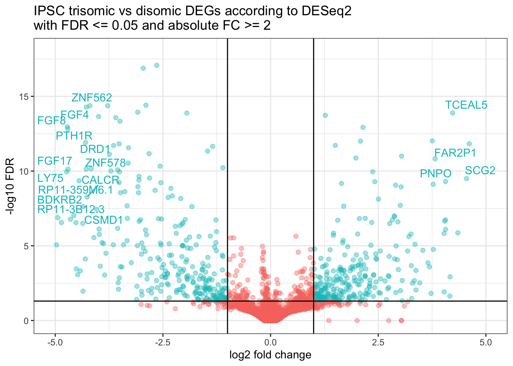
Figure 5.1: ggplot2 Volcano plot for DESeq2 output
As an alternative method that uses standard R plotting with color-coding the DEGs can be done by adding points for each group separately and giving them a certain color. By using the with function we don’t have to type deseq.results$padj but can suffice with typing padj to access this column. The first plot command plots all the points in black and we overwrite points in different colors with the points function later on.
# Base plot
with(deseq.results, plot(log2FoldChange, -log10(padj), pch=20,
main=paste("IPSC trisomic vs disomic DEGs according to DESeq2",
"with FDR <= 0.05 and absolute FC >= 2", sep="\n"),
xlim=c(-5,5), ylim=c(0,18), xaxt = 'n'))
# Add custom x-axis with more ticks (default was (-)2, 4, 6)
axis(side = 1, at = seq(-6, 6, 1))
with(subset(deseq.results, padj < pval_threshold ),
# Add points for statistically significant genes
points(log2FoldChange, -log10(padj), pch=20, col="red"))
with(subset(deseq.results, abs(log2FoldChange) > logfc_threshold),
# Add points for expression > logfc_threshold
points(log2FoldChange, -log10(padj), pch=20, col="orange"))
with(subset(deseq.results, padj < pval_threshold & abs(log2FoldChange) > logfc_threshold),
# Add points based on both significance and expression
points(log2FoldChange, -log10(padj), pch=20, col="green"))
# Add threshold lines
abline(h=-log10(pval_threshold), lwd=1.5, lty=2, col='gray')
abline(v=c(-logfc_threshold, logfc_threshold), lwd=1.5, lty=2, col='gray')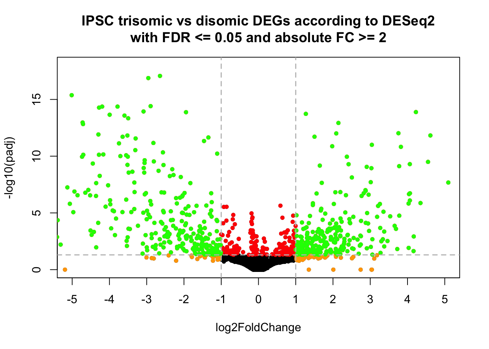
Figure 5.2: Vanilla R Volcano plot for DESeq2 output
5.2 Venn Diagram
Another common visualization is a Venn-diagram. In this document for instance, both DESeq2 and edgeR have been used to find DEGs. To quickly compare the results from these packages we can create a single diagram showing how many DEGs are found by both packages and - also interesting - the number of genes (amount, not which) that are uniquely found by both approaches. Most likely you will be comparing DEGs between groups instead of methods. For our example dataset, this could have been comparing DEGs comparing IPSC trisomic vs IPSC disomic DEGs with NEUR trisomic vs NEUR disomic DEGs.
Creating a Venn-diagram can be a good method for selecting a (sub)set of DEGs, for instance by selecting the set of DEGs that are shared between groups (the Intersection, see the Wikipedia page on Set Theory or the other way around, only the DEGs that are unique for a group (the Difference). Keep this in mind when continuing on to the clustering section below where it is most likely not useful to cluster all combinations you might have.
Code examples:
* Data preparation (first code-chunk): creating vectors of DEGs for both packages. These DEGs are the gene names (taken from the rownames of the edgeR and DESeq2 outputs)
* Using the VennDiagram library (second code-chunk): good for complex/ large number of comparison, highly configurable but more difficult to use. To see some examples, run the following function in the Console: example('draw.quad.venn')
* Using the gplots library (third code-chunk): Easier to use and support for more complex Venn diagrams, but not good for adjusting appearance.
# edgeR data:
# Get the set using topTags from the output of the
# "Genewise Negative Binomial Generalized Linear Models with Quasi-likelihood Tests"
# otherwise known as the 'glmQLFit' function from edgeR
ttags <- as.data.frame(topTags(qlf, n = nrow(qlf)))
# Filter on adjusted p-value and get the rownames
# edgeR
edgeR.degs <- row.names(ttags[ttags$FDR <= pval_threshold,])
# DESeq2
DESeq.degs <- row.names(deseq.results[deseq.results$padj <= pval_threshold,])The two created vectors of rownames can be used by either taking their lengths (for the VennDiagram library) or just their names (for the gplots library).
# Venn-diagram using the `VennDiagram` library (see below for alternative method)
library(VennDiagram)
# Calculate the intersection of the two sets
deg.intersect = length(intersect(edgeR.degs, DESeq.degs))
deg.venn <- list('intersect' = deg.intersect,
'edgeR' = length(edgeR.degs),
'DESeq2' = length(DESeq.degs))
# Arguments for a pairwise (two-sets) venn-diagram are sizes for set1, set2 and overlap (intersect)
# Many more functions are available for triple, quad and quantuple diagrams
venn.plot <- draw.pairwise.venn(deg.venn$edgeR, deg.venn$DESeq2, deg.venn$intersect,
category = c("edgeR", "DeSEQ2"), scaled = F,
fill = c("light blue", "pink"), alpha = rep(0.5, 2),
cat.pos = c(0, 0))
# Actually plot the plot
grid.draw(venn.plot)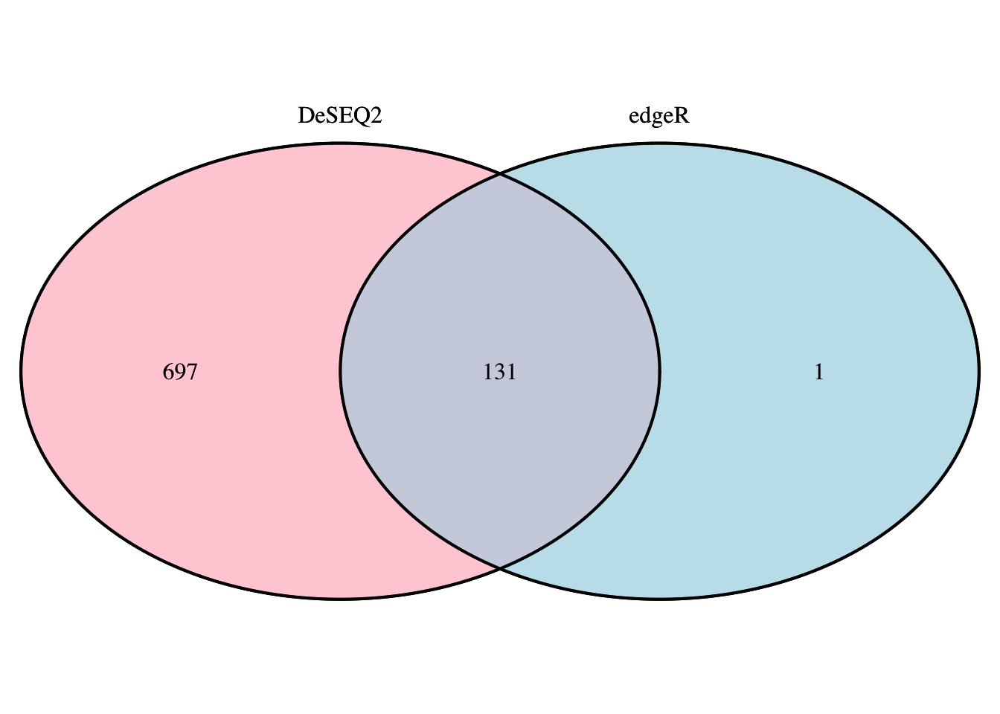
Figure 5.3: Venn diagram comparing edgeR and DESeq2 DEGs using ‘VennDiagram’
As mentioned, following is an easier alternative (especially when you have > 2 groups) with the venn function from the gplots library. This only needs a list containing either the row-numbers or the gene-names of the DEGs which is easier (but offers less adjustability to make it prettier).
# Alternative method using the `gplots` library
library(gplots)
# Create a Venn-diagram given just the list of gene-names for both sets
venn(list(edgeR = edgeR.degs,
DESeq = DESeq.degs))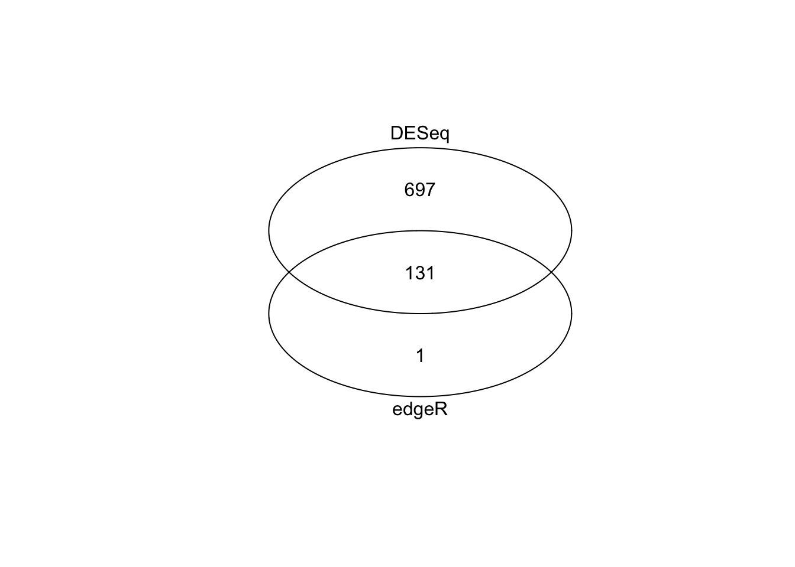
Figure 5.4: Venn diagram comparing edgeR and DESeq2 DEGs using ‘gplots’
While there is an almost complete overlap between both techniques, DESeq2 finds a total of >700 genes that edgeR does not denote as DEG. Besides the difference in nuber of DEGs, there is also a notable difference in the calculated log fold change values. The following boxplot shows - for all DEGs - the distribution of the log-FC values where DESeq2 shows a far wider range of values. This is possibly due to the large difference in number of DEGs but can also be attributed to different normalization techniques and the many choices of models to choose from for the analysis.
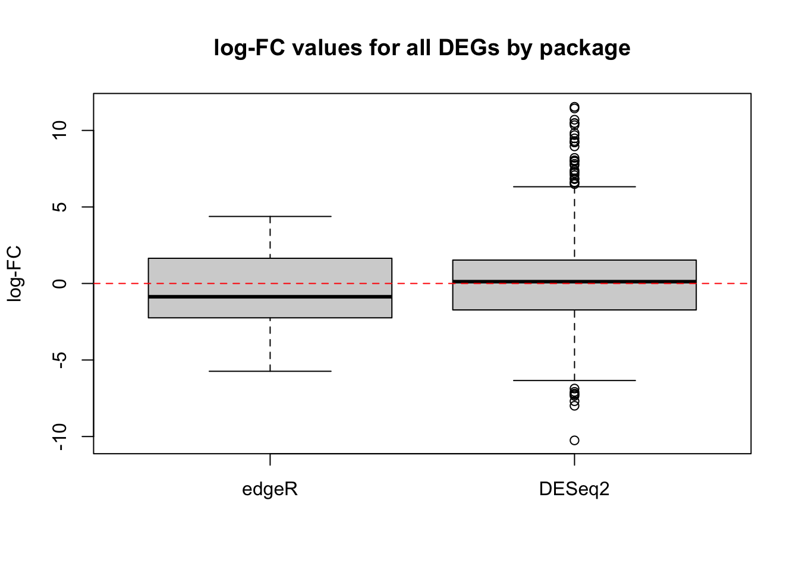
Figure 5.5: Boxplot comparing spread of log fold change values
Let’s quickly compare these log-FC values on a per-gene basis including manually calculated from the DESeq2 rlog and the edgeR cpm methods.
| Gene | edgeR.lFC | DESeq2.lFC | rlog.lFC | cpm.lFC |
|---|---|---|---|---|
| PCDHA10 | -3.605 | -3.632 | -1.985 | -3.492 |
| CHGA | 2.923 | 2.828 | 1.999 | 2.988 |
| TSSC2 | 3.176 | 3.094 | 2.354 | 3.222 |
| ARRB1 | -3.911 | -3.903 | -2.679 | -3.779 |
| LRFN5 | -4.627 | -4.621 | -3.077 | -4.509 |
| MAP2 | 2.649 | 2.55 | 1.253 | 2.704 |
| C11orf54 | -1.953 | -1.962 | -1.455 | -1.887 |
| WNT3 | -3.487 | -3.465 | -2.478 | -3.369 |
| TFAP2C | -2.98 | -2.957 | -2.049 | -2.983 |
| PITPNM2 | -2.669 | -2.644 | -1.954 | -2.668 |
5.3 Clustering
One of the basic visualization steps to show expression data and patterns accross samples. Here, we can create a heatmap of the found DEGs for all samples where the colors show the fold-change value. Usually this heatmap is shown with a two color gradient; from red (downregulated) to green (upregulated). This is however optional and using the default colors from pheatmap for example is perfectly fine as long as a proper legend is present.
There are multiple methods of creating a heatmap (one of which you’ve already used) and most of these directly apply clustering in the visualization. This clustering can be applied to the expression pattern of a gene (row-clustering), the expression pattern of a sample (column-clustering) or both (default for pheatmap). The first example shown here uses column-based clustering as it shows the replicates for multiple groups (IPSC disomic and trisomic) with their rlog-transformed expression values for the top 30 genes as found by DESeq2. This first example allows an overview of the expression patterns for the DEGs and to see the differences in expression between replicates. It is expected that the replicates for each group cluster together as shown in this example. Genes (rows) are clustered based on their expression values.
genes <- rownames(ttags[abs(ttags$logFC) >= 1,])[1:30]
# Add the averages for both groups and (manually) calculate the log-FC
deseq.results$di <- rowMeans(deseq.results[,ipsc.di])
deseq.results$tri <- rowMeans(deseq.results[,ipsc.tri])
deseq.results$rloglFC <- deseq.results$tri - deseq.results$di
replicate.lFC <- deseq.results[genes, ipsc.tri] - deseq.results[genes, 'di']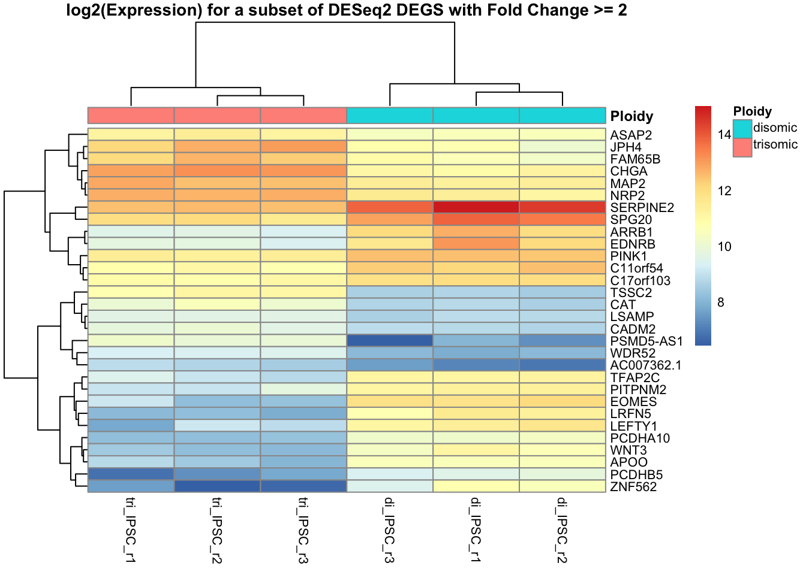
Figure 5.6: Heatmap showing the expression values of all disomic and trisomic IPSC samples
This second example is more commonly found in publications as this shows the log fold change values for the comparison that was done. The first three columns shown in this heatmap are the log fold changes of the separate IPSC trisomic replicates vs the average IPSC disomic expression. The 4th column shows the log fold change values for the average IPSC trisomic vs average IPSC disomic samples. Note that column-clustering has been turned off for this type of plot by setting cluster_cols = FALSE (all replicates are from the same group, clustering will not add any useful information).
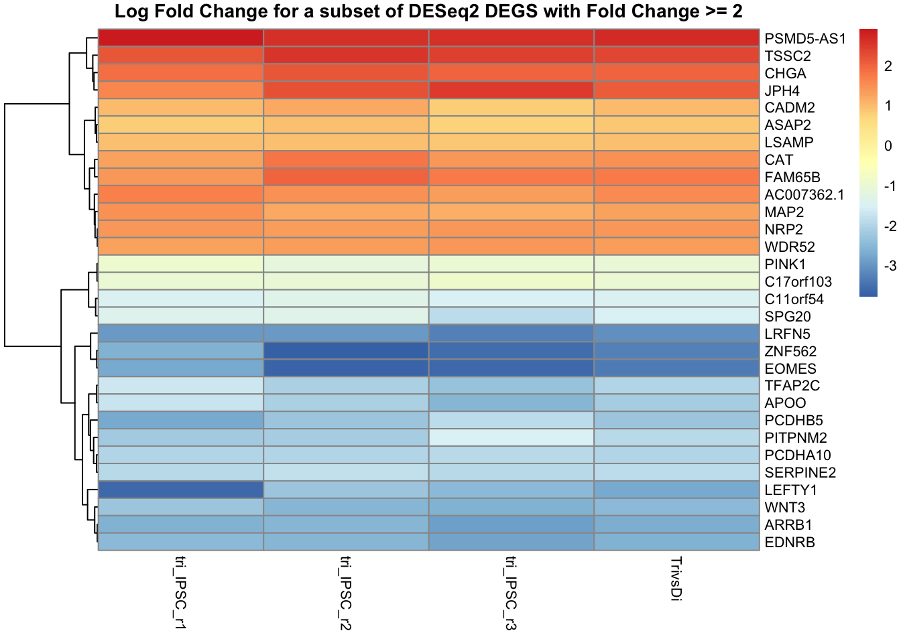
Figure 5.7: Heatmap showing the Log Fold Changes of all trisomic vs averaged disomic IPSC samples and the average trisomic vs average disomic IPSC samples
A limitation of a heatmap will show itself when more then 100 DEGs are found; this just doesn’t fit well in a single figure and causes the clustering and especially the gene names/ labels to be unreadable. It is therefore always adviced to not only filter on the adjusted p-value, but also on the log-FC value to reduce the number of genes shown. Alternatively if the data is properly annotated, instead of showing gene names for each row, showing a GO-term clustering might reveal expression patterns for certain gene groups.
5.4 Pathway Analysis
In some cases you’ll see hundreds or even thousands of DEGs as a result of an analysis. These large amounts of DEGs are too much for most visualization approaches or to easily say something about the biological context for that many genes.
One approach for tackling such a large set of DEGs is pathway analysis where through different methods genes are grouped by pathway to get an overview of affected pathways in the experiment.
This section will demonstrate two methods for this analysis, one using an online platform for gene-annotation enrichment analysis and an R-method for signaling pathway impact analysis.
5.4.1 Gene Functional Classification using DAVID (>100 DEGs)
The online Database for Annotation, Visualization and Integrated Discovery DAVID tool suite allows for multiple - functional - annotation methods, one of these can be used for enrichment analysis based on gene annotation. To use the DAVID tools we need to have the list of gene names, ID’s or other identifyable information (no need for p-values or fold-changes). The basics of this method consist of grouping genes in pathways, count how many genes are in each pathway and compare this with what you would expect if you take a random sample from the genome with the same size as the number of your DEGs.
For example, if the RNA transport pathway contains a total of 50 genes out of the total of 25.000 for the whole mouse genome. This means 0.2% of all mouse genes have a role in this pathway.
If you uploaded a total of 1000 DEGs for analysis, you expect 0.2% = 2 genes from your DEG list to be placed in this pathway. But, it seems that there are 10 genes from the RNA transport pathway in the set of 1000 genes, which is 5 times as much as expected. This difference between expected and observed gene counts per pathway allows to say if a particular pathway is enriched.
DAVID provides a single interface to perform multiple different annotation pipelines, see the table below for available types and their use.
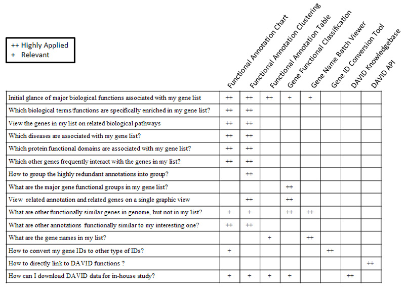
The following example code writes the gene symbols for both analysis approaches to a file for upload on DAVID.
# Write gene names to a file
write.table(edgeR.degs, file = "../data/edger-deg-names.txt",
row.names = FALSE, quote = FALSE, col.names = FALSE)
write.table(DESeq.degs, file = "../data/deseq-deg-names.txt",
row.names = FALSE, quote = FALSE, col.names = FALSE)Upload data
Click on the Start Analysis button at the top of the DAVID website. Then, copy the genes (A) or upload the file (B) and select the proper identifier type (OFFICIAL_GENE_SYMBOL in this example). Select the Gene List option in Step 3 and click on the Submit List button in Step 4.
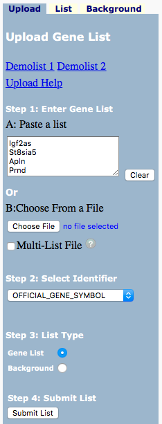
This usually results in a popup that mentions that some of your IDs were found in multiple organisms. Close the popup and select your own organism (Mus musculus in this example) from the Species list. From the 940 uploaded gene-symbols, 881 were found in the mouse which we select followed by clicking on the Select Species button.
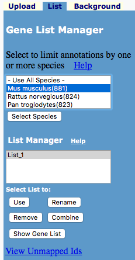
The most useful analysis is the Functional Annotation Chart, selectable from the Start Analysis page after uploading the set of genes. The output table shows many (in this case ~560) chart records in which the genes were grouped. These records orginate from various sources, such as GO-terms, Interpro, KEGG-pathways, SMART, etc. See the image below for a quick explaination of what is displayed in such a chart (mostly just a table..).
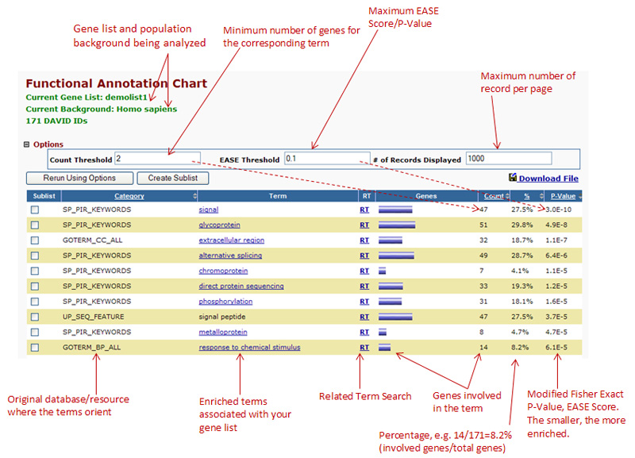
An interesting statistic to add to this table is the Fold Enrichment that shows how over- or under-represented this group is. Note that this is not based on gene-expression but only on the deviation of the of the amount of genes provided for a certain group from what is expected given the total number of uploaded gene IDs.
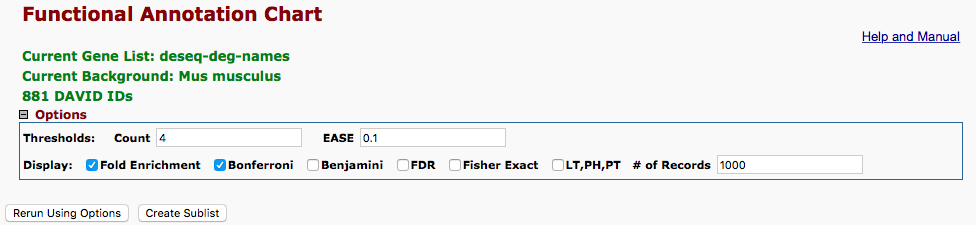
Now, looking at the article for a random example set with GSE ID GSE80128, one of the conclusions mentions the following on their gene-in-research (Igf2as):
It is suggested that Igf2as play a role in energy metabolism, the cell cycle, histone acetylation and muscle contraction pathways.
With almost a 1000 DEGs grouped in 560 different categories, you can find ‘evidence’ for most conclusions and the difficulty here is finding the truly important pathways. Adviced is to only check the KEGG-pathways listed in the table, sort by the corrected p-value and inspect the pathways that look interesting. For this example, amongst others, the following pathways were listed as significant (p-value < 0.05):
- Metabolic pathways: includes many pathways, 100 genes in total with a 1.6-fold enrichment
- Citrate cycle (TCA): major metabolic pathway, 9 genes with a 5.7-fold enrichment
- Cardiac Muscle contraction: 12 genes with a 3.3-fold enrichment
Clicking on the Term in the table for a KEGG-pathway shows a graphical representation of this pathway indicating the found DEGs (blinking, even), see below.
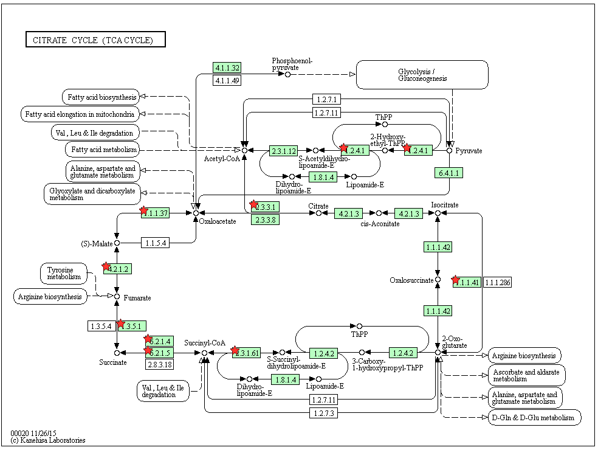
5.4.2 KEGG-pathway Visualization (>10 DEGs)
Knowing the interesting KEGG-pathway(s) upfront (i.e. it is listed in the article) allows for visualizations applied to that selected pathway. For this we can use the pathview website or Bioconductor library:
“… It maps and renders a wide variety of biological data on relevant pathway graphs. All users need is to supply their data and specify the target pathway. Pathview automatically downloads the pathway graph data, parses the data file, maps user data to the pathway, and render pathway graph with the mapped data.”
This section demonstrates only the use of the bioconductor package for visualizing not only the DEGs onto pathways, but also the change in expression for each gene.
## Bioconductor library (install with bioclite() if missing)
library(pathview)
## Example pathway IDs (for human, change organism key for other organisms)
data("paths.hsa")
pander(head(paths.hsa, n=5))| hsa00010 | hsa00020 | hsa00030 | hsa00040 | hsa00051 |
|---|---|---|---|---|
| Glycolysis / Gluconeogenesis | Citrate cycle (TCA cycle) | Pentose phosphate pathway | Pentose and glucuronate interconversions | Fructose and mannose metabolism |
## Check 'gene.idtype' argument possibilities
data(gene.idtype.list);
pander(gene.idtype.list)SYMBOL, GENENAME, ENSEMBL, ENSEMBLPROT, UNIGENE, UNIPROT, ACCNUM, ENSEMBLTRANS, REFSEQ, ENZYME, TAIR, PROSITE and ORF
## Prepare data for visualization
deseq.degs.logfc <- subset(deseq.results, padj < pval_threshold, select = log2FoldChange)
pander(head(deseq.degs.logfc))| log2FoldChange | |
|---|---|
| ABAT | 0.7499 |
| ABCC13 | -3.452 |
| ABHD12B | -3.306 |
| AC002480.2 | -0.161 |
| AC002480.5 | -5.129 |
| AC005062.2 | -1.951 |
pathview(gene.data=deseq.degs.logfc,
pathway.id="00020", # TCA-cycle
species="hsa" # Organism key
)It is fine to use the webtool too for this purpose however it is not notacibly easier to use than the R package.
5.4.3 Signaling Pathway Impact Analysis (>20 DEGs)
To also look at the topology of how genes interact with each other, we can use the SPIA Bioconductor package. This package takes a list of Entrez gene IDs for all DEGs and the complete list of Entrez IDs for all present genes and evaluates - per pathway - if genes are involved and if the pathway is either inhibited or activated.
The code below uses data objects that were not always shown before, see the tables below for their contents.
# Bioconductor package for "Signaling Pathway Impact Analysis"
# (install with biocLite("SPIA") if it is not installed)
library(SPIA)
# Only used for the `subset` function
library(dplyr)
# Get a vector of log(FC) values for all significant genes
sig_genes <- subset(deseq.results, padj < pval_threshold, select = log2FoldChange)[[1]]
# Make it a named vector by assigning the Entrez ID's to each log(FC) value
names(sig_genes) <- subset(deseq.results, padj < pval_threshold, select = EntrezID)[[1]]
# A complete list of Entrez IDs for all genes in this experiment
all_genes <- deseq.results$EntrezIDThe input sig_genes named vector contents:
And the all_genes vector or Entrez IDs input (note that this does not contain any expression information, just IDs):
pander(all_genes[which(idx)[100:110]])## Error:
## ! object 'all_genes' not foundError: ! object ‘all_genes’ not found Backtrace: ▆ 1. └─pander::pander(all_genes[which(idx)[100:110]])
To start processing all pathways looking for influenced signal pathway, execute the spia function for the proper organism (Mus Musculus, or mmu in this case):
# Process all signaling pathways to see if they are inhibited or activated
spia_result <- spia(de=sig_genes, all=all_genes, organism="hsa", plots=TRUE)Running this function will print a list of (> 100) pathways it will analyze, so this will take a while:
Done pathway 1 : RNA transport..
Done pathway 2 : RNA degradation..
Done pathway 3 : PPAR signaling pathway..
Done pathway 4 : Fanconi anemia pathway..
Done pathway 5 : MAPK signaling pathway..
Done pathway 6 : ErbB signaling pathway..
Done pathway 7 : Calcium signaling pathway..
Done pathway 8 : Cytokine-cytokine receptor int..
Done pathway 9 : Chemokine signaling pathway..
Done pathway 10 : NF-kappa B signaling pathway..
Done pathway 11 : Phosphatidylinositol signaling..
Done pathway 12 : Neuroactive ligand-receptor in..
Done pathway 13 : Cell cycle..
...
Done pathway 132 : Graft-versus-host disease..
Done pathway 133 : Arrhythmogenic right ventricul..
Done pathway 134 : Dilated cardiomyopathy..
Done pathway 135 : Viral myocarditis..The resulting data frame is ordered by a p-value and contains the following information:
To get an overal picture we can create a plot where each pathway is a point which is placed according to the spia calculated over-representation p-value and pNDE (which is the probability to observe at least nDE genes on the pathway). In this case it is obvious that Alzheimer’s and Parkinson’s pathways with ID’s 05010 and 05012 respectively are the most influenced by this experiment, according to this method.
plotP(spia_result)